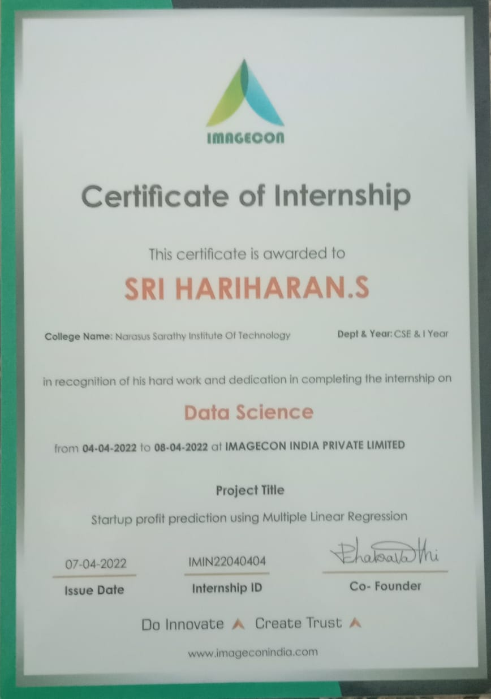

Hey there! I'm Srihariharan, a Computer Science and Engineering student from Salem, Tamil Nadu, India. I've been diving deep into programming, and I'm pretty comfortable with Java, C, HTML, CSS, and JavaScript.
So, picture this: I was in this online coding session, right? They threw us a challenge to create a Library Management System. It sounded tough, but I took it head-on and built it from scratch using Java. It was a fantastic learning experience, and I'm proud of what I created.
But that's not all. I also decided to challenge myself further. Inspired by Netflix's interface, I thought, "Hey, why not create my own version?" And that's how I ended up developing a Netflix clone. Let me tell you, it was quite the journey, but totally worth it!
Now, outside of coding, one thing I'm really passionate about is music. Eminem is my absolute favorite artist. His lyrics just speak to me on a different level.
So, that's a bit about me! Welcome to my portfolio, where you'll see how my passion for coding, love for challenges, and appreciation for music all come together to create something special.
Welcome to my certification showcase! I believe in the power of continuous learning and professional development. In this section, I proudly display the certifications I've earned, showcasing my dedication to mastering new skills, staying current with industry standards, and delivering excellence in my work. Each certificate represents a milestone in my journey, reflecting my commitment to personal and professional growth. Explore my certifications below to learn more about the expertise and qualifications I bring to every project and endeavor.
1. Library Management System (Java + MySQL):
This project is a comprehensive solution for managing library operations efficiently. Built using Java for the backend and MySQL for the database, it enables librarians to manage books, patrons, borrowing, returns, and other library-related tasks. Features include user authentication, book search and checkout, fine calculation, and reporting capabilities.
2. Netflix Clone (HTML + CSS):
Inspired by the popular streaming service, this Netflix clone is a front-end replica created using HTML and CSS. It offers a visually appealing interface similar to Netflix, showcasing movie and TV show thumbnails, navigation menus, and a responsive layout. While it doesn't have actual streaming capabilities, it provides a realistic demonstration of front-end design skills.
3. Seating Arrangement Program (Java):
This Java project automates the process of seating arrangement for events, classrooms, or theaters. Users can input parameters such as the number of seats, rows, columns, and any special requirements. The program then generates an optimized seating arrangement based on the given constraints, ensuring efficient space utilization and convenience for attendees.
4. Calculator (HTML + CSS + JavaScript):
This web-based calculator is a simple yet functional tool for performing basic arithmetic operations. Developed using HTML for structure, CSS for styling, and JavaScript for functionality, it offers a user-friendly interface with buttons for digits and operations. Users can input numbers, perform calculations, and see results instantly, making it a handy tool for quick mathematical tasks.
Welcome to my resume section! Here you'll find a comprehensive overview of my skills, experiences, and qualifications. From my education and professional background to my technical expertise and accomplishments, this resume provides a snapshot of who I am as a professional. Explore the details below to learn more about my journey, achievements, and the value I can bring to your team or project.
click here to download my resume